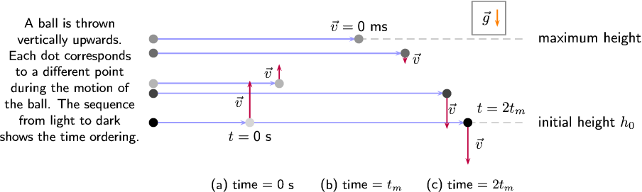
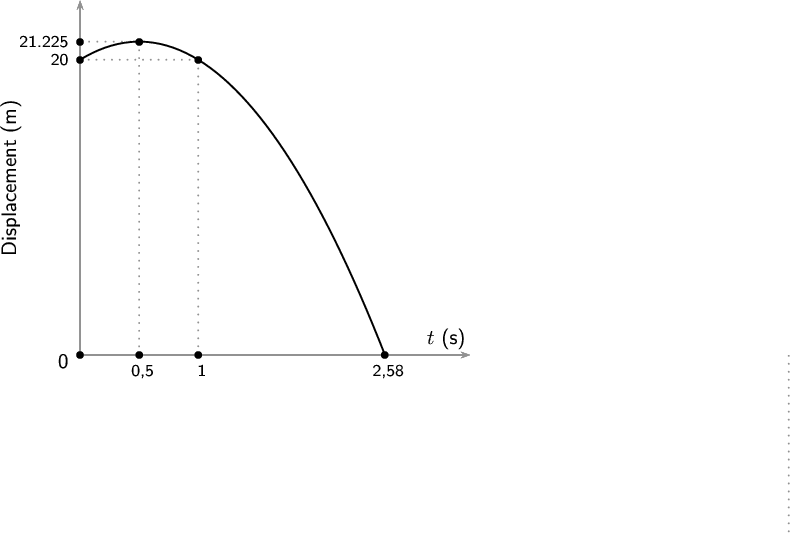
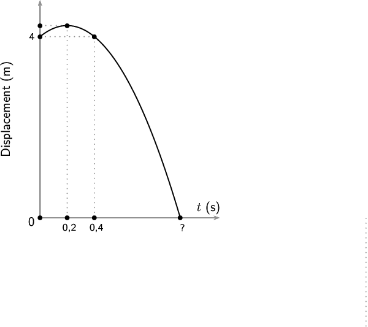
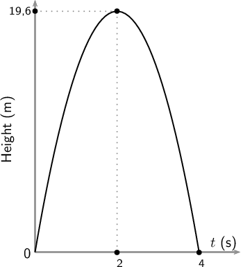

In Grade 11, we studied the motion of objects in free fall and saw that such an object has a constant gravitational acceleration of . We now study the motion of objects that are moving upwards or downwards while experiencing a force due to gravity. We call this projectile motion. We will only consider the case where objects move straight upwards and/or downwards -- meaning that there is no horizontal displacement of the object, only vertical displacement.
Motion in a gravitational field
We know from Newton's Law of Universal Gravitation that an object in the Earth's gravitational field feels
a force pulling it towards the centre of the Earth. If this is the only force acting on the object then the object
will accelerate towards the centre of the Earth.
A person standing on the Earth's surface will interpret this acceleration as objects always falling downwards.
In Grade 11, we showed that the value of the acceleration due to gravity can be treated as a having a constant magnitude of
.
In reality, if you go very far away from the Earth's surface, the magnitude of
would change, but, for everyday problems, we can safely treat it as constant. We also ignore
any effects that air resistance (drag) might have.
For the rest of this chapter we will deal only with the case where the force due to gravity is the only force acting.
The initial velocity, , that an object has and the acceleration that it experiences are two different quantities. It is very important to
remember that the gravitational acceleration is always towards the centre of the Earth and constant, regardless of the direction or magnitude
of the velocity.
Projectiles moving upwards or downwards in the Earth's gravitational field always accelerate
downwards with a constant acceleration
. Note: acceleration means that the velocity is
changing.
Objects moving upwards or downwards in the Earth's gravitational field always accelerate towards the centre of the Earth. This looks like a downwards
acceleration to someone standing on the Earth's surface. We don't draw both vectors on the object because we would be mixing velocity and acceleration
which are two different physical quantities.
This means that if an object is moving upwards with some initial velocity in the vertical direction, the magnitude of the velocity in the vertical direction
decreases until it stops (
) for an instant. The point at which the velocity is reduced to zero corresponds with the maximum height, , that the object reaches. After this, the object
starts to fall. It is very important to remember that the acceleration is constant but the velocity vector has changed magnitude and direction. At the maximum height where the velocity is zero the acceleration is still .
Projectiles that have an initial velocity upwards will have zero velocity at their greatest height, . The acceleration is still .

<code>(-5,0)(12,5)
\psline[linestyle=dashed,linecolor=lightgray](6.5,2)(7.8,2)
\psline[linestyle=dashed,linecolor=lightgray](3.9,4)(7.8,4)
\psline[linecolor=blue!40!white]{->}(-1,2.)(1.23,2.)
\psline[linecolor=blue!40!white]{->}(-1,2.)(6.43,2.)
\psline[linecolor=blue!40!white]{->}(-1,2.942)(1.93,2.942)
\psline[linecolor=blue!40!white]{->}(-1,3.659)(4.93,3.659)
\psline[linecolor=blue!40!white]{->}(-1,4)(3.83,4)
\psline[linecolor=blue!40!white]{->}(-1,2.703)(5.93,2.703)
\psdots[dotsize=6pt,linecolor=black!20!white](-1,2)
\psdots[dotsize=6pt,linecolor=black!35!white](-1,2.942)
\psdots[dotsize=6pt,linecolor=black!50!white](-1,4)
\psdots[dotsize=6pt,linecolor=black!65!white](-1,3.659)
\psdots[dotsize=6pt,linecolor=black!80!white](-1,2.703)
\psdots[dotsize=6pt,linecolor=black](-1,2)
\rput(-3,3){
\small
\begin{tabular}{c}
A ball is thrown \\
vertically upwards.\\
Each dot corresponds\\
to a different point\\
during the motion of\\
the ball. The sequence\\
from light to dark\\
shows the time ordering.
\end{tabular}
}
\psline[linecolor=purple]{->}(1.3,2)(1.3,3)
\uput[l](1.3,2.5){$
\vec{v}$}
\psdots[dotsize=6pt,linecolor=black!20!white](1.3,2)
\rput(2,2.942){\psline[linecolor=purple]{->}(0,0)(0,.45)
\uput[l](0,.25){$
\vec{v}$}}
\psdots[dotsize=6pt,linecolor=black!35!white](2,2.942)
\psdots[dotsize=6pt,linecolor=black!50!white](3.9,4)
\rput(5,3.659){\psline[linecolor=purple]{->}(0,0)(0,-.25)
\uput[r](0,-.125){$
\vec{v}$}}
\psdots[dotsize=6pt,linecolor=black!65!white](5,3.659)
\rput(6,2.703){\psline[linecolor=purple]{->}(0,0)(0,-.85)
\uput[r](-.15,-.37){$
\vec{v}$}}
\psdots[dotsize=6pt,linecolor=black!80!white](6,2.703)
\uput[r](8,2){initial height $h_0$}
\uput[r](8,4){maximum height}
\rput(7,2.5){
\psframe[linecolor=gray](-.4,1.6)(.4,2.4)
\psline[linecolor=orange]{->}(0.2,2.2)(0.2,1.8)
\uput[l](0.2,2){$
\vec{g}$} }
%initial dot
%\psdots[dotsize=6pt](1.3,2)
\rput[t](1.3,1.8){$t=\text{0~s}$}
\rput(1.3,0.5){
\small (a) time = 0~s} % middle dot
% \psdots[dotsize=6pt](3.9,4)
\rput[b](3.9,4.2){$\vec{v}=\text{0~m·s}$}
% \rput[t](3.9,3.8){$t=t_m$}
\rput(3.9,0.5){
\small (b) time = $t_m$} %final dot
\psline[linecolor=purple]{->}(6.5,2)(6.5,1)
\uput[r](6.5,1.5){$
\vec{v}$}
\psdots[dotsize=6pt](6.5,2)
\rput[b](7.3,2.2){$t=2t_m$}
\rput(6.5,0.5){
\small (c) time = $2t_m$}</code>
(a) An object is thrown upwards from height
. (b) After time
, the object reaches its maximum height, and starts to fall. (c) After a time
the object returns to height
.
Consider an object thrown upwards from a vertical height
. We have said that the object will travel upwards with decreasing vertical velocity
until it stops, at which point it starts falling. The time that it takes for the object to fall back down to
height
is the same as the time taken for the object to reach its maximum height from height
. This is known as time symmetry.
Investigate the motion of a falling body
Aim
To measure the position and time during motion and to
use that data to plot a“Position vs Time” and “Velocity
vs Time” graph from which
we can calculate the magnitude for gravitational acceleration, .
Work with a friend. Copy the table below into your workbook.
Attach a length of tape to a mass.
Run the other end of the tape through the ticker timer.
Start the ticker timer going and allow the mass to fall freely.
Repeat steps 1–3.
On each piece of tape, measure the distance between successive dots. Note these distances in
the table below.
Use the frequency of the ticker timer to work out the time intervals between successive dots.
Note these times in the table below,
Work out the average values for distance and time.
Use the average distance and average time values to plot a graph of “Distance vs Time”
onto graph paper. Stick the graph paper into your workbook.
(Remember that “A vs B” always means “y vs x”).
Insert all axis labels and units onto your graph.
Use your averaged distance values to determine the distance between two consecutive dots.
Determine the magnitude of the velocity by dividing the distance between dots by the time.
Use the magnitude of the velocity and time values to plot a graph of “Velocity vs Time”
onto graph paper. Stick the graph paper into your workbook.
Draw the best straight line through your data points.
Determine the slope of the straight line. This is the magnitude of the acceleration.
Results
Table 1
Distance (m)
Time (s)
1
2
Ave.
1
2
Ave.
Table 2
Change in distance (m)
Change in time (s)
Magnitude of velocity ()
Discussion
Describe the motion of the trolley down the ramp.
Equations of motion
The equations of rectilinear motion that you learnt about in Grade 10 can be used for vertical projectile
motion, with acceleration from gravity:
. Why, because the equations of rectilinear motion can be applied to any motion
in a straight line with constant acceleration. If we are only considering vertical motion (up and down) it is
motion in a straight line and the acceleration,
, is constant and along the same line. We use the magnitude of
for our calculations.
Now would be a good time to revise both rectilinear motion and quadratic equations
from Grade 10.
Remember that when you use these equations, you are dealing with vectors which have magnitude
and direction. Therefore, you need to decide which direction will be the
positive direction so that your vectors have the correct signs. The equations of motion that you learnt about
in Grade 10 are:
In the case of vertical projectile motion, we know that the only force we will consider is gravity and therefore the acceleration will be .
is the change in displacement. If the coordinate system you choose isn't centred at the point from which the motion starts (i.e. you don't have ) then you must remember that the change in displacement and displacement are not the same. The displacement is given by . If then .
Now we can apply this mathematical description of vertical motion to solving problems.
A ball is thrown vertically upwards with an initial velocity of
~. A photograph (shown) is taken when the ball is
~ above the point of release.
Determine the maximum height above the thrower's hand reached by the ball.
Determine the time it takes the ball to reach its maximum height.
Determine the time(s) when the ball will be at the position shown in the photograph.
Identify what is required and what is given
We are required to determine the maximum height reached by the ball and how long it takes to
reach this height. We are given the initial velocity
upwards and the acceleration due to gravity
downwards. We also need to determine when the ball is at the position shown in the
photograph.
The ball is thrown straight up and will reach a maximum height, at which point its velocity will be zero, before beginning to fall downwards. The height of the ball in the photograph is given
as ~ above the initial point. Adding the information to the picture helps us
understand what is going on more effectively:
Even though there are a number of questions to answer, the best approach is to work through them
one at a time.
First, as with rectilinear motion in Grade 10, select a positive direction. We choose down as positive and
remember to keep this convention for the whole problem. This will allow us to analyse the information
given and determine directions and signs. We know that at the maximum height the velocity of the ball
is
~. We therefore have the following:
(it is negative because we chose downwards as positive)
We know that the position shown (~ above the point of release) will be passed as the ball rises to its maximum height and
then again as the ball falls downwards.
Identify the appropriate equation to determine the height
We can use
to solve for the height.
Substitute the values into the equation and find the height
The value for the displacement will be negative because the displacement is upwards and we have
chosen downward as positive (and upward as negative). The maximum height will be a positive number,
.
Identify the appropriate equation to determine the time
We can use
to solve for the time.
Substitute the values in and find the time
Determine the times at which the ball is in the position in the photograph
We know the displacement, initial velocity and the acceleration of the ball. We also expect to get
two values as we know the ball will pass through the point twice.
We substitute our values into the equation
, which is a quadratic equation in time, so we expect to find
two different solutions if we solve for time.
It is important to notice that we can use the value
~ as the displacement above the initial position.
Write the final answer
The ball:
reaches a maximum height of
~;
takes
~ to reach the top; and
passes through the point in the photograph at
=
~ on the way up and t =
~ on the way down.
The use of a sign convention should not affect your result. As an exercise, repeat the previous worked example using the opposite
sign convention to verify that you do get the same result.
A cricketer hits a cricket ball so that it goes vertically upwards. If the ball
takes
~ to return to the initial height, determine its maximum height.
Identify what is required and what is given
We need to find how high the ball goes. We know that it takes
~ to go up and down. We do not know what the initial velocity () of the ball is.
After the batsman strikes the ball it goes directly upwards and the only force that will be
acting on the ball will be the gravitational force. This information is represented in the photograph below:
For a problem like this it is useful to divide the motion into two parts. The first part of the
motion consists of the upward motion of the ball with an initial velocity () and
a final velocity () at the maximum height. The second part of the motion consists of
the downward motion of the ball with an initial velocity () and final velocity () which is not yet known.
Choose down as positive. We know that at the maximum height, the velocity of the ball is
~. We also know that the ball takes the same time to reach its maximum height as it takes
to travel from its maximum height to the initial position, due to time symmetry. The time taken is half the total time.
Therefore, we have the following information for the second (downward) part of the motion of the ball:
(half of the total time)
downwards
Find an appropriate equation to use
We do not know the final velocity of the ball coming down. We need to choose an equation that
does not have
in it. We can use the following equation to solve for
:
Substitute values and find the height
In the second motion, the displacement of the ball is
~ downwards. This means that the height was
.
Write the final answer
The ball reaches a maximum height of
~.
A sequence of balls are successively dropped from the top of a tower. The time interval between
the release of consecutive balls is equal. At the precise instant that the ninth ball (ball 9) is released, the
first ball hits the ground. Which of the balls in the sequence is at of the height,
, of the tower when the first ball hits the ground?
Understand what is happening
A ball is dropped from a tower. After a time, , a second ball is dropped. After another time interval,
, a third ball is dropped. This means that when ball 3 is dropped the total time that
has passed is .
After a third time interval,
, a fourth ball is dropped. This means that at the instant that ball 4 is dropped the total time that has passed is .
This process continues until the ninth ball is dropped. At the same instant that the ninth ball is dropped, the first ball that was dropped strikes the ground.
The ninth ball would have been
released after 8 time intervals, therefore it took the first ball a time interval of to hit the ground.
Describe the events mathematically
As this is a vertical motion problem where everything is falling towards the ground, it is
simplest to choose downwards as the positive direction.
The first ball hits the ground when
the ninth ball is dropped. This means that the first ball has fallen for a total time of
.
The displacement of the first ball is also described by the equation . The balls are dropped so
their initial velocity is zero, and the we know the time for the first ball to fall the height of the tower therefore, in the case
of the first ball, we have:
Let the th ball be the ball that is at of the height, , of the tower when the first ball strikes the ground. The
th ball will have fall for a time of . If it is of the way up the tower it will have fall a distance of
. This motion is also described by , and therefore we know, in the case of the
th ball, we have:
We can't solve for from this final equation because it will contain and . We can use the two equations
we have to eliminate . Both equations are written in the form therefore we can equate them eliminating :
We know that must be a positive integer which is why we use the positive roots when we take the square root above.
Write the final answer
The fifth ball is at
of the height of the tower when the first ball strikes the ground.
Exercises
A cricketer hits a cricket ball straight up into the air. The cricket ball has an initial
velocity of
~.
What height does the ball reach before it stops to fall back to the ground.
How long has the ball been in the air for?
Zingi throws a tennis ball straight up into the air. It reaches a height of
~.
Determine the initial velocity of the tennis ball.
How long does the ball take to reach its maximum height?
A tourist takes a trip in a hot air balloon. The hot air balloon is ascending (moving up) at a
velocity of
~. He accidentally drops his camera over the side of the balloon's basket, at a height of
~. Calculate the velocity with which the camera hits the ground.
A ball is dropped vertically from a tower. If the vertical distance covered in the last second is
equal to the distance covered in first three seconds, find the height of the tower.
Let us consider that the ball covers the height
in
second. Then, the distance covered in the
second is given as :
On the other hand, the distance covered in first 3 seconds is :
According to question,
Therefore, the height of the tower is :
Graphs of vertical projectile motion
We can describe vertical projectile motion through a series of graphs: displacement, velocity and acceleration versus time graphs. This isn't new, in Grade 10 you learnt about
the graphs for describing rectilinear motion with constant acceleration. In the previous
section we motivated
for using the same equations of motion as in rectilinear motion. Therefore, everything you
learnt about the graphs describing rectilinear motion is applicable when describing vertical
projectile motion.
Now would be a good time to revise the section on graphs in rectilinear motion
from Grade 10.
Remember that:
For the graphs of these quantities the slope and the area under a graph can
tell us about changes in other quantities. As a reminder, here is a summary table, from
Grade 10 rectilinear motion,
about which information we can derive from the slope and the area of various graphs:
Position vs time, velocity vs time and acceleration vs time graphs.
The graphs are the graphical representations of the equations of motion. This means that
if you have the graph for one of displacement, velocity or acceleration you should be able
to write down the corresponding equation and vice versa.
The type of graphs is related to the equation of motion: displacement is a parabola,
velocity is a straight line and acceleration is a constant. The characteristic features
then depend on the sign convention and the specific values of the problem.
To illustrate the variation, we consider three separate cases: (1) the object has an
initial velocity in the upward direction (opposite direction to ), (2) the object falls from rest (no initial velocity), and (3) the object
has an initial velocity in the downward direction (same direction as ).
Important: the horizontal axis in these graphs is time, not space.
Case 1: Initial velocity upwards
Consider an object undergoing the following motion:
at time the object has an initial position, , and an
initial upward velocity of magnitude ,
the object reaches a maximum height, , above the ground,
the object then falls down to a final position, , with a final velocity downward at time = .
The equation for displacement is given by:
. We
have to choose a positive direction as before. We choose upwards as positive.
The displacement versus time graph for the motion described is shown below:
It is important to notice that we are plotting displacement versus time and the initial displacement, , is not necessarily zero. The displacement as a function of time
will be given by . The initial displacement, , will shift the graph of up or down by a constant factor. Whether it is an upward or downward shift will depend on which direction was chosen as the positive direction. The magnitude of the shift will depend on the choice of origin for the coordinate system (frame of reference).
The second graph is a linear function showing the velocity as a function of time:
. Note that we chose upwards as our positive direction therefore the acceleration due to gravity will be negative. The slope (i.e.
the coefficient of ) of the
velocity versus time graph is the acceleration and the slope is negative which is
consistent with our expectations after choosing upwards as the positive direction.
The final plot is a graph of acceleration versus time, and is constant because the magnitude and direction of the acceleration due to gravity are constant.
We start by choosing a direction as the positive direction. We want to compare the graphs with the first case, so
we will choose the same direction (upwards) to be the positive direction.
The one thing that remains the same is the acceleration,
, due to gravity. Therefore:
If an object starts from rest (for example is dropped), then the initial velocity is zero. We know that there is constant acceleration and hence the graph of velocity
versus time looks like this:
It is important to notice that the slope of all the velocity versus time graphs has the same magnitude. If the same direction is chosen as positive then the slope
has the same magnitude AND the same sign (direction). The difference in these graphs is related to the initial velocity, .
For the case where the object falls from rest, the equation for displacement is and the graph of the displacement versus time looks like this:
For motion with an initial velocity in the negative direction, the graph of displacement versus
time will be a narrower parabola as compared to the case where the object falls from rest. This is shown in this graph
where the initial velocity is in the negative direction:
The primary difference in features between the cases we've looked at is that for Case 1, the displacement graph has a maximum positive displacement (it has a peak), while in Cases 2 and 3, where the initial velocity is negative, the displacement is always negative.
You may be wondering if the final displacement is always the same as the initial displacement, as we had for our Case 1 example. That is not necessarily true. If an object is thrown up from the edge of a cliff, the initial position of the object will be the height of the cliff but the final displacement will be at the base of the cliff. If we choose the point from which the object is thrown as the origin of our coordinate system then the graph will look like this:
If we choose to centre our coordinate system at the base of the cliff then the graph will look like this,
because the initial displacement is the height of the cliff:
Stanley is standing on a balcony
~ above the ground. Stanley tosses a rubber ball upwards with an initial velocity of
~. The ball travels upwards to a maximum height, and then falls to the ground. Draw graphs of position vs time,
velocity vs time and acceleration vs time. Choose upwards as the positive direction.
We examine each of these parts separately. To be able to draw the graphs, we need to determine
the time taken and displacement for each of the motions.
Find the height and the time taken for the first motion
The ball starts from a position of
~ (at t =
~) from the ground and moves upwards until it reaches
+ (at ). It then falls back to
~ (at
) and then falls to the ground,
at ().

<code>(-1.5,-1.5)(8,7)
\psset{ axesstyle=axes, llx=-1cm,lly=-1cm, xunit=2 }
\psaxes[labels=none,linecolor=gray,subgriddiv=1,griddots=10,tickcolor=gray,ticklinestyle=dotted,xticksize=0cm,yticksize=.0cm,Dx=3, Dy=4]{->}(0,0)(3.3,6)%[$x$,-90][$y$,180]
\rput[b]{0}(3.1,.1){$t~
\text{(s)}$}
\rput[b]{90}(-.5,3){Displacement (m)}
\rput[ur]{0}(-.1,-.1){0}
\rput[r]{0}(-0.1,5){
\footnotesize{20}}
\rput[r]{0}(-0.1,5.30625){
\footnotesize{21.225}}
\psline[linecolor=gray,linestyle=dotted]{-}(0,5)(1,5)
\psline[linecolor=gray,linestyle=dotted]{-}(1,0)(1,5)
\psline[linecolor=gray,linestyle=dotted]{-}(0,5.30625)(.5,5.30625)
\psline[linecolor=gray,linestyle=dotted]{-}(0.5,0)(.5,5.30625)
\psplot[algebraic=true,plotstyle=curve]{0}{2.58}{-1.225*x*x + 1.225*x + 5} %
\psline[linecolor=gray,linestyle=dotted]{-}(6,0)(6,-3)
\uput[d](2.58,0){
\footnotesize{2,58}}
\uput[d](.5,0){
\footnotesize{0,5}}
\uput[d](1,0){
\footnotesize{1}} % do the dots last so that they overlay any lines.
\psdot(.5,5.30625)
\psdot[](0,5.30625)
\psdot[](0,5)
\psdot(1,5)
\psdot[](0,0)
\psdot[](0.5,0)
\psdot[](1,0)
\psdot[](2.58,0)</code>
Graph of velocity vs time
The ball starts off with a velocity of
~ at t =
~, it then reaches a velocity of
~ at t =
~. It stops and falls back to the Earth. At t =
~ (i.e. after a further
~) it has a velocity of
~. This is the same as the initial upwards velocity but it is downwards. It carries on at
constant acceleration until .
In other words, the velocity graph will be a straight line. The final velocity of the
ball can be calculated as follows:
We chose upwards to be positive. The acceleration of the ball is downward.
. Because the acceleration is constant throughout the motion, the graph looks
like this:
The graph below (not drawn to scale) shows the motion of a tennis ball that was thrown vertically
upwards from an open window some distance from the ground. It takes the ball
~to reach its highest point before falling back to the ground. Study the graph given and
calculate:
how high the window is above the ground.
the time it takes the ball to reach the maximum height.
the initial velocity of the ball.
the maximum height that the ball reaches.
the final velocity of the ball when it reaches the ground.

<code>(-1.5,-1.5)(8,7)
\psset{ axesstyle=axes, llx=-1cm,lly=-1cm, xunit=1.5 }
\psaxes[labels=none,linecolor=gray,subgriddiv=1,griddots=10,tickcolor=gray,ticklinestyle=dotted,xticksize=0cm,yticksize=.0cm,Dx=3, Dy=4]{->}(0,0)(3.3,6)%[$x$,-90][$y$,180]
\rput[b]{0}(3.1,.1){$t~
\text{(s)}$}
\rput[b]{90}(-.5,3){Displacement (m)}
\rput[ur]{0}(-.1,-.1){0}
\rput[r]{0}(-0.1,5){
\footnotesize{4}}
\psline[linecolor=gray,linestyle=dotted]{-}(0,5)(1,5)
\psline[linecolor=gray,linestyle=dotted]{-}(1,0)(1,5)
\psline[linecolor=gray,linestyle=dotted]{-}(0,5.30625)(.5,5.30625)
\psline[linecolor=gray,linestyle=dotted]{-}(0.5,0)(.5,5.30625)
\psplot[algebraic=true,plotstyle=curve]{0}{2.58}{-1.225*x*x + 1.225*x + 5} %
\psline[linecolor=gray,linestyle=dotted]{-}(6,0)(6,-3)
\uput[d](2.58,0){
\footnotesize{?}}
\uput[d](.5,0){
\footnotesize{0,2}}
\uput[d](1,0){
\footnotesize{0,4}} % do the dots last so that they overlay any lines.
\psdot(.5,5.30625)
\psdot[](0,5.30625)
\psdot[](0,5)
\psdot(1,5)
\psdot[](0,0)
\psdot[](0.5,0)
\psdot[](1,0)
\psdot[](2.58,0)</code>
Find the height of the window
The initial position of the ball will tell us how high the window is. From the y-axis on the
graph we can see that the ball is
~ from the ground.
The window is therefore
~ above the ground.
Find the time taken to reach the maximum height
The maximum height is where the position vs time graph reaches its maximum position.
This is when t =
~.
It takes the ball
~ to reach the maximum height.
Find the initial velocity (
) of the ball
To find the initial velocity we only look at the first part of the motion of the ball. That is
from when the ball is released until it reaches its maximum height. We have the following for this: In
this case, let's choose upwards as positive.
To calculate the initial velocity of the ball (
), we use:
The initial velocity of the ball is
~upwards.
Find the maximum height of the ball
To find the maximum height we look at the initial motion of the ball. We have the
following:
To calculate the displacement from the window to the maximum height () we use:
The maximum height of the ball is
above the ground.
Find the final velocity (
) of the ball
To find the final velocity of the ball we look at the second part of the motion. For this we
have:
We can use
to calculate the final
velocity of the ball.
The final velocity of the ball is
~downwards.
A cricketer hits a cricket ball from the ground and the following graph of velocity vs time was
drawn. Upwards was taken as positive. Study the graph and follow the instructions below:
Describe the motion of the ball according to the graph.
Draw a sketch graph of the corresponding displacement-time graph. Label the axes.
Draw a sketch graph of the corresponding acceleration-time graph. Label the axes.
We need to study the velocity-time graph to answer this question. We will break the motion of the
ball up into two time zones: to and to .
From to the following happens:
The ball starts to move at an initial velocity of
~ and decreases its velocity to
~ at . At the velocity of the ball is
~ and therefore it stops.
From to the following happens:
The ball moves from a velocity of
~ to
~ in the opposite direction to the original motion.
If we assume that the ball is hit straight up in the air (and we take upwards as positive), it
reaches its maximum height at , stops, and falls back to the Earth to reach the ground
at .
Draw the displacement-time graph
To draw this graph, we need to determine the displacements at and .
At :
The displacement is equal to the area under the graph:
Area under graph = Area of triangle
Displacement =
~
At :
The displacement is equal to the area under the whole graph (top and bottom). Remember that an
area under the time line must be subtracted:
Area under graph = Area of triangle 1 + Area of triangle 2
Displacement =
~
The displacement vs time graph for motion at constant acceleration is a curve. The graph will look
like this:

<code>(-1.5,-1.5)(5,7)
\psset{ axesstyle=axes, llx=-1cm,lly=-1cm, yunit=.3 }
\psaxes[labels=none,linecolor=gray,subgriddiv=1,griddots=10,tickcolor=gray,ticklinestyle=dotted,xticksize=0cm,yticksize=.0cm,Dx=3, Dy=4]{->}(0,0)(5,20.5)%[$x$,-90][$y$,180]
\rput[b]{0}(4.6,.1){$t~
\text{(s)}$}
\rput[b]{90}(-.5,10){Height (m)}
\rput[ur]{0}(-.1,-.1){0}
\rput[r]{0}(-0.1,19.6){
\footnotesize{19,6}}
\psplot[algebraic=true,plotstyle=curve]{0}{4}{-4.9*x*x + 4.9*4*x}
\psline[linecolor=gray,linestyle=dotted]{-}(2,0)(2,19.6)
\psline[linecolor=gray,linestyle=dotted]{-}(0,19.6)(2,19.6)
\uput[d](4,0){
\footnotesize{4}}
\uput[d](2.,0){
\footnotesize{2}} % do the dots last so that they overlay any lines.
\psdot(2,0)
\psdot(2,19.6)
\psdot(0,19.6)
\psdot(4,0)</code>
Draw the acceleration versus time graph
To draw the acceleration vs time graph, we need to know what the acceleration is. The
velocity versus time graph is a straight line which means that the acceleration is constant. The gradient of
the line will give the acceleration.
The line has a negative slope (goes down towards the left) which means that the acceleration has
a negative value.
The velocity vs time graph corresponding to the motion of an object is given, using the graph we need to describe the actual motion. Notice that the graph has discontinuities,
this naturally breaks the graph into phases. We should process each phase separately and then try to infer (figure out) what probably happened to change
from one phase to the next.
The first thing that you normally do in a vertical projectile motion problem is choose
a positive direction. In this case you can't do that because it has already been decided.
We need to use the information given to figure out which direction was chosen as positive.
Determine the direction chosen as positive
We are given a velocity vs time graph. We know that the slope of the velocity time
graph is the acceleration and we know that in these problems we are only dealing with
gravitational acceleration. We can use what we know about gravitational acceleration
and the slope of the graph to determine which direction was chosen as positive.
Gravitational acceleration is always directed towards the centre of the Earth. If we
choose:
upwards as the positive direction then the slope of the velocity vs time graph
will be negative
downwards as the positive direction then the slope of the velocity vs time graph
will be positive
In this problem the slope of the velocity vs time graph is negative and so we know
that upwards was chosen as the positive direction.
First phase
In the plot below we highlight only the first phase of interest.
The initial velocity is positive and then decreases linearly, passes through zero and reaches the same magnitude in the negative direction. The positive starting value means
the object was going upwards, the linear decreases means a constant acceleration in the negative direction, passing through zero means that the object reaches a maximum
height before beginning to fall in the negative direction. The fact that the magnitude of the initial and final velocities is the same means that there is time symmetry.
This is just the plot of an object being thrown/shot/projected upwards, peaking and falling back to the same level as it was thrown from.
Second phase
In the plot below we highlight only the second phase.
Just as in the first phase, the initial velocity is positive and then decreases linearly, passes through zero and reaches the same magnitude in the negative direction. The positive starting value means
the object was going upwards, the linear decreases means a constant acceleration in the negative direction, passing through zero means that the object reaches a maximum
height before beginning to fall in the negative direction. The fact that the magnitude of the initial and final velocities is the same means that there is time symmetry.
This is just the plot of an object being thrown upwards, peaking and falling back to the same level as it was thrown from.
Combining phases
We know that the two phases look the same, the object starts off moving upwards, peaks, falls down to the initial position and then repeats the process.
This could be a description of a ball bouncing as an example.
Position vs time
To draw an accurate position graph we know that we are dealing with the Case 1 situation from earlier. We need to determine the height that the object rises to and then
we can plot the position vs time. We know the timing information from the velocity vs time plot.
We can verify that the acceleration is in fact from gravity by using :
We can work out the height using the equation for displacement:
The acceleration is due to gravity except at one point, when the object bounces. At that point the acceleration must be some other, very large,
value in the positive direction but we don't have enough information to determine what the value must be. We explicitly note that at that point the
acceleration is NOT -~.
A hot-air balloon is moving vertically upwards at a constant speed. A camera is accidentally dropped from the balloon at a height of ~ as shown in the diagram below. The camera strikes the ground after ~. Ignore the effects of friction.
At the instant the camera is dropped, it moves upwards. Give a reason for this observation.
(1 mark)
Calculate the speed at which the balloon is rising when the camera is dropped.
(4 marks)
Draw a sketch graph of velocity versus time for the entire motion of the camera.
Indicate the following on the graph:
Initial velocity
Time at which it reaches the ground
(4 marks)
If a jogger, ~ away from point P as shown in the above diagram and running at a constant speed of ~, sees the camera at the same instant it starts falling from the balloon, will he be able to catch the camera before it strikes the ground?
Use a calculation to show how you arrived at the answer.
(5 marks)
[TOTAL: 14 marks]
Exercises
Amanda throws a tennis ball from a height of
~ straight up into the air and then lets it fall to the ground. Draw graphs of
vs t; v vs t and a vs t for the motion of the ball. The initial velocity of the
tennis ball is
. Choose upwards as positive.
A bullet is shot straight upwards from a gun. The following graph is drawn. Downwards was chosen
as positive
Describe the motion resulting from the velocity vs time graph shown below, assuming an initial height of ~, and draw a displacement vs time graph and an
acceleration vs time graph:
A ball that always bounces off the floor with the same magnitude of the velocity as it hit the floor is dropped from ~
above a stack of 7 crates. Each crate is ~ high. After the ball bounces off a crate it is quickly removed so that
the next time the ball bounces it bounces off the next crate in the pile. This is repeated until all the crates have been removed. Draw the following graphs for the situation:
Displacement vs time
Velocity vs time
Acceleration vs time
A ball is dropped from ~
above a cushioned mat. Each time the ball bounces the magnitude of the velocity in the upwards direction is half the magnitude of the velocity with which it hit the floor.
The ball is allowed to bounce 5 times, draw the following graphs for the situation and the equation describing each section of the graph: